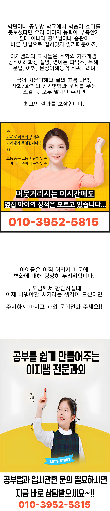

교육기관을 고를 때 가장 먼저 생각해야 할 것은 목표와 학습자 성향이에요. 가정 환경과 통학 거리, 수업 시간표가 일상 리듬과 맞는지 살펴보는 것이 중요해요. 강사의 전문성은 내용 전달력과 동기 부여에 직접적인 영향을 미쳐요. 커리큘럼이 교과 과정과 연계돼 단계별 목표가 명확히 제시돼 있는지 확인해요. 수강료 대비 제공되는 학습 자료와 피드백 빈도는 가성비 판단의 핵심 포인트예요. 수업 장소 내부 분위기가 학생들의 상호작용을 촉진하고 스트레스 관리에 도움이 되는지도 체크해요. 체험 수업이나 상담을 통해 직접적인 경험을 얻고, 질문에 대한 대응을 관찰해요. 예를 들어 범어동 지역에서는 접근성이 중요한 요소로 작용해요. 마지막으로 주변 학부모들의 후기와 평판을 종합해 신뢰성을 검증하는 것이 좋겠어요.
초등 저학년은 범어동에서 집중력이 짧아 놀이와 학습을 적절히 섞는 방식이 효과적이에요. 초등 고학년은 자기 주도 학습 습관을 형성하기 위해 목표 설정과 점검이 필요합니다요. 중학생은 과목별 심화 내용과 시험 대비 전략을 동시에 관리해야 해요. 고등학생은 핵심 개념을 반복하고 응용 문제를 풀어 보는 것이 실전 감각을 키우는데 도움이 됩니다요. 마지막으로, 전체 학년은 시험 전 예상 문제를 스스로 출제해 보는 연습을 통해 사고력을 강화할 수 있어요요. 또한, 학부모가 함께 참여하는 학습 일지 작성은 습관 형성에 큰 도움이 됩니다요. 이후, 교사의 개별 피드백이 정기적으로 제공되는지도 확인해 보세요요.
첫 번째로, 범어동 과외교사는 학생 중심의 질문 기반 수업을 도입해 학습 흐름을 스스로 점검하도록 돕고 있어요. 두 번째로, 수업 시간은 교사의 설명이 전체의 절반 이하로 제한돼 학생 참여도가 높아지고, 실전 적용 능력이 강화돼요. 세 번째로, 미술 일반 과정은 1400분 코스가 180,000원, 1100분 코스가 140,000원으로 합리적인 가격에 제공돼요. 네 번째로, 시험 기간에도 평소와 동일한 학습 리듬을 유지하도록 설계돼 있어 학습 습관이 깨지지 않아요. 다섯 번째로, 일대일 상담을 통해 개인 목표와 현재 수준을 정확히 파악하고 맞춤형 피드백을 제공해요. 여섯 번째로, 학부모 상담 시 구체적인 성과 지표와 향후 계획을 제시해 신뢰를 얻고 있어요. 일곱 번째로, 범어동 과외교사 내에서 진행되는 복습 세션은 학습 내용 정리를 돕고 장기 기억으로 연결돼요.
| 과외명 | 와와학습코칭과외 |
| 수강료 | 미술일반(1400분) 180,000원 | 미술일반(1100분) 140,000원 |
CURRICULUM
커리큘럼은 시험 전 1:1 맞춤 피드백 시간을 확보해 개인 약점을 보완해요. 첫 단계에서는 기본 개념을 시각화하고, 두 번째 단계에서는 삼각형의 외심과 내심을 활용한 문제 풀이 전략을 익혀요. 세 번째 단계에서는 실제 시험과 유사한 모의고사를 통해 시간 관리 능력을 키워요. 마지막 단계에서는 오답 노트를 활용해 반복 학습을 강화하고, 성취도 그래프를 통해 진도를 시각적으로 확인해요.
범어동 과외교사 선택 초기 단계에서 목표 설정이 흐려지는 경우가 자주 발생해요. 등록 후에는 기대와 실제 수업 내용 차이로 동기 저하가 나타날 수 있어요. 학습 관리 단계에서는 과제 미루기가 큰 걸림돌이 되죠. 이러한 실수를 사전에 인지하고 대비하면 학습 효율을 크게 높일 수 있어요.
범어동 과외교사은 수업 중 특정 학생에게만 발언 기회가 주어지지 않도록 발화 균형 구조를 꼼꼼하게 설계해요. 객관적인 학습 분석 데이터를 바탕으로 소통 방식을 적용하니 학생들의 몰입도가 크게 늘고 과제 완성률도 향상되는 결과를 보여줬답니다. 선생님은 적당한 긴장감을 주어 집중력을 끌어올리는 말투를 사용하며, 버스 정류장에서 가까운 범어동의 거리를 활용해 접근성까지 높였어요. 이러한 전략적인 접근 덕분에 학생들은 수업 시간에 지루해하지 않고 끝까지 집중할 수 있는 환경을 경험하게 돼요.
고등학교 3학년으로 복습은 꾸준히 하지만 시험 긴장으로 성적이 떨어지는 학생에게 적합해요. 공부 방식이 맞는지 몰라 불안해하는 학생에게도 맞춤 피드백과 체계적인 학습 계획을 제공해 자신감을 회복시켜요.
시험 직전 중요한 개념을 정리해 주셔서 큰 도움이 되었어요. 꾸준한 관리 구조 덕분에 성취감이 지속되고 있어요. 교재와 단계가 연계된 수업이 이해를 돕고, 개인별 과제 완성도를 체크받으며 리마인드가 효과적이었어요. 반복 수업 구조가 학습 흐름을 잡아줘서 스스로 공부 계획을 세우는 데 자신감이 생겼어요. 전체적으로 만족스러운 경험이었고, 주변 친구에게도 추천하고 싶어요.